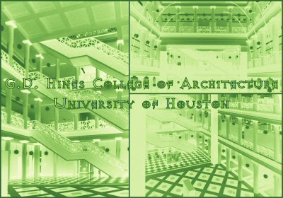
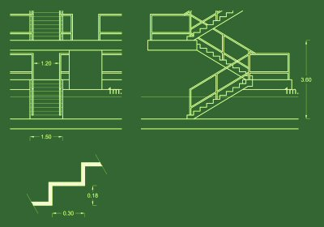
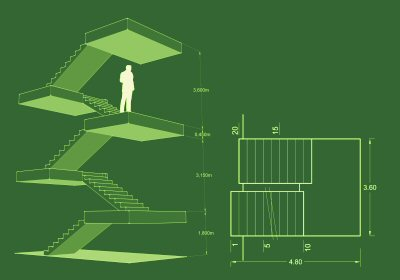
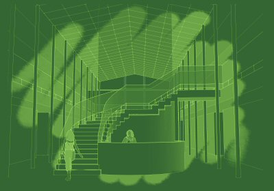
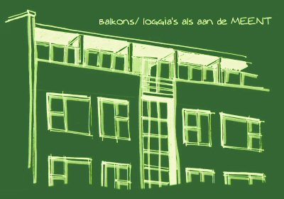

tools.of.design.and.composition.
week.vier.
elements
deze week verzamelen we architectonische elementen. We graven in onze gedachten en verleden op zoek naar elementen die we in ons ontwerp kunnen gebruiken. Daarbij valt te denken aan arceden, porticos, trappen, patio's, gallerijen, dakterrassen, binnentuinen, etc.
4.1. doorsneden (incl. perspectief, zoals Rossi)

4.2. 3D handschetsen van elementen

[mozaiekvloeren en interessante trappen van Johnson/Burgee]



[trap met geïntegreerde koffiebar]
